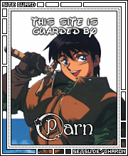

Forums galactiques > Assemblée Galactique : diplomatie officielle > Elections galactiques
| CLEMENT Respect diplomatique : 0  21/09 ETU 19:09 | Score : 0 Détails je vote l'atlante.
| ||
| yable Respect diplomatique : 250  21/09 ETU 19:10  | Score : 0 Détails En effet, les informations sont une arme, et il faut savoir les dispernser au mieux.
Vous prouvez par la meme commandant Ta Brioche, votre manque d'expérience. A propos d'informations, je tiens à préciser que le commandant Vador fait partie de la Guilde, et qu'il ne peut par conséquent pas voter ici. Il y a des elections pour les guildiens également, donc participez au bon endroit, ce sera plus légitime. | ||
| general straken Respect diplomatique : 4  21/09 ETU 19:31 | Score : 0 Détails je vote pour L'Atlante
| ||
| Ta Brioche Respect diplomatique : 27  21/09 ETU 20:16 | Score : 0 Détails Avec tout le respect que je vous dois commandants, chacun est libre de ses propos dans cette assemblee et l omerta qui semble vouloir etre imposee par certains me parait inadmissible. Tant que des propos va t en guerre ou extremistes ne sont pas proferes dans cette enceinte personne n a le droit d imposer le silence et personne ne me l imposera!
Le commandant ta brioche, epris de liberte de parole, se rassit a cote de sa bienaimee. | ||
| yable Respect diplomatique : 250 21/09 ETU 20:37 | Score : 0 Détails Vous prenez nos propos de travers je le craint mon cher...
Il est juste quelque peu déplacé de diffuser des informations de ce type à la légère. De plus, l'appartenance de l'Atlante à une coalition puissante ne l'empechera aucunement de faire son devoir de générallissime, bien au contraire. Donc vos arguments faisaient non seulement intervenir des informations qui n'ont pas a être diffusées comme cela, mais en plus, vos arguments sont (à mon avis) difficlement recevables. Et autre chose : le fait que vous vous enerviez si facilement nuit à votre candidature... | ||
| Captain Helmut Respect diplomatique : 0  21/09 ETU 20:40 | Score : 0 Détails Un Commandant que surment personne n'avait remarqué jusque là alla prendre la parole et dit posément:
"En temps que guildien inexpérimenté je me garderai de proférer le moindre soutient à qui que ce soit mais je souhaiterai m'exprimer à propot du débat en cours sur les dires de Tabrioche. Je ne crois (je peux me tromper et je m'en excuse à l'avance) pas avoir quelque règle que ce soit interdisant la difamation. Le commandant Tabrioche a espionné ses semblabes et a divulgé les informations qu'il a obtenu à des fin électoral. C'est certe maladroit, déloyal, je suis d' accord, je le pense également. Je trouve par contre un peu arbitraire d'ordonné à ce commandant de se taire sur ce simple critaire. Je trouve aussi atristant d'assister dans notre assemble à ce genre de lute intestine pour le pouvoir au sein d'une même union. Commant voulez vous stopper les guerre si vous vous la faite entre vous? J'espère m'être fait entendre et avoir été claire." | ||
| yable Respect diplomatique : 250 21/09 ETU 20:49 | Score : 0 Détails Personne ne lui ordonne de se taire, bien au conraire, mais je souhaitais juste exprimer moi meme mon opignon sur cette affaire...
Il a le droit d'y répondre comme il l'entend ! Je tiens tout de meme que je detiens moi meme un certain nombre d'informations sur beaucoup de monde, que je pourrais utiliser dans les diverses elections en cours, mais que je me force moi meme à me taire par égard pour les personnes concernées. Donc, c'est une morale que je respecte moi meme et que j'exprime quand l'occasion m'est donnée, mais libre aux autres de ne pas vouloir la respecter. Mais le sujet dévie trop de son sujet d'origine, je m'en excuse car j'ai moi meme participé à cette déviation. | ||
| Ta Brioche Respect diplomatique : 27 21/09 ETU 23:26 | Score : 0 Détails Ne vous meprenez pas non plus sur mes intentions. Mon objectif n est pas de diffamer l Atlante, qui objectivement ferait un bon generalissime, mais de proposer une alternative credible a un membre d une coalition qui est deja la plus puissante et de loin et detient la plupart des leviers du pouvoir galactique a l exemple du poste de guildien en chef (ce sera bientot l honorable commandant Akhenaton).
Je precise que j ai moi meme de nombreuses informations en ma possession et que je n ai pas l intention de les utiliser a des fins diffamatoires mais croyez moi que certaines feraient l effet d une bombe... | ||
| kenuo Respect diplomatique : -14  22/09 ETU 00:02 | Score : 0 Détails kenuo resta perplexe et inquiet devant ces révélations!!!
| ||
| Sephiroth Respect diplomatique : 4  22/09 ETU 08:01 | Score : 0 Détails je vote l'atlante
| ||
| Morcar Baughlir Respect diplomatique : 0  22/09 ETU 08:07 | Score : 0 Détails L'enfant s'approcha de la foule :
"Je suis de plus navré de devoir intervenir pour qu'on ne compte pas le vote de Vador... Celui ci est guildéen..." Reprennant sa place, il dit ce qu'il avait a dire. | ||
| Captain Helmut Respect diplomatique : 0 22/09 ETU 08:47 | Score : 0 Détails Le Captain Helmut, dans son coin resta songeur en se disant que ce n'était pas de cette manière que le Commandant TaBrioche allait convaincre les gens à voter pour lui
| ||
| Parn Respect diplomatique : 0  22/09 ETU 10:28 | Score : 0 Détails Je vote pour l'Atlante
| ||
| L'Atlante Respect diplomatique : 0  22/09 ETU 10:41 | Score : 0 Détails Avec le commandant Ta Brioche, nous avons convenu d'une date de fin des votes. Celle-ci est fixé au vendredi 23 septembre à 21h.
Pour le moment, après avoir compté les votes nous sommes à : Ta Brioche : 0 L'Atlante : 6 J'aimerai que plus de fédéralistes votent pour le bien de la galaxie. | ||
| Necrid Respect diplomatique : 26  22/09 ETU 12:30 | Score : 0 Détails "Je precise que j ai moi meme de nombreuses informations en ma possession et que je n ai pas l intention de les utiliser a des fins diffamatoires mais croyez moi que certaines feraient l effet d une bombe..."
De quoi parlez-vous, Commandant Ta Brioche ? Quelles sont ces "nombreuses informations en [votre] possession [...] qui feraient l'effet d'une bombe" ? J'attends avec une impatience non dissimulée que vous nous les divulguiez mais malheureusement je crains fort qu'à l'instar du sénateur McCarthy au moment de la tristement "chasse aux sorcières", ce ne soit là qu'un effet de manche... Cordialement, Commandant Necrid. | ||
| Necrid Respect diplomatique : 26 22/09 ETU 12:31 | Score : 0 Détails * tristement célèbre
| ||
| Captain Helmut Respect diplomatique : 0 22/09 ETU 12:48 | Score : 0 Détails En entendant ces propots, le commandant Helmut ne put contenir un soupir d'exaspération, il resta cepandant très posé lorsqu'il prit la parole:
"Comme l'a souligné à juste titre le commandant Yable le débat n'a que trop dévié de son sujet. Dois-je vous rapeller chère Necrid que si nous somme rassemblés ici c'est afin de débatre du futur de notre galaxie et non pas pour savoir qui a telle information contre tel commandant, ce qui, à force d'énervement et de mauvaises interprétations des dires et des informations, aboutira j'en suis sur à un nouveau conflie millénaire et, à terme, à une nouvellle apocalypse. N'en avons pas eu assez? N'avons nous pas organisé des élèction démocratique au niveau de chaque factions afin que la tention reignant ici baisse un temps soit peu? J'espère contribué à une prise de consiance afin que les conflis soit mi de coté au moin le temps des élections." Espèrant avoir fait réagit l'assemblée, le petit commandant cheveulu et moustachu se rassit à sa palce en espèrant que le débats ne dérape plus. | ||
| Necrid Respect diplomatique : 26 22/09 ETU 12:58 | Score : 0 Détails Permettez-moi de m'insurger contre vos propos mais quand un des candidats accuse l'autre sous prétexte qu'il possède des "informations", il est du devoir des électeurs de demander des éclaircissements.
| ||
| Ta Brioche Respect diplomatique : 27 22/09 ETU 14:29 | Score : 0 Détails Dans ce cas, je me permets de dire que le commandant Akhenaton n est que la reincarnation du tristement celebre Alcibiade, connu pour avoir detruit la galaxie en companie d Alphonsehubert, obiwan kenobi et greg.
Le fait qu il soit a deux doigts d obtenir le poste de chef guildien et qu il fasse partie de votre coalition me parait assez explosif. | ||
| yable Respect diplomatique : 250 22/09 ETU 14:39 | Score : 0 Détails Je ne sait pas si vous avez suivi toutes les discutions depuis le début de la renaissance de cet univers, mais j'en doute.
Cependant, Akhetanon à lui même répété à plusieurs reprises qu'il était la réincarnation du commandant yankee, qui était un honnorable commerçant avant l'apocalypse. J'en ai moi même la preuve, ainsi que de nombreux commandants ici présents. Donc je ne sait pas si vous êtes manipulés (dans ce cas j'aimerais savoir par qui car il vous trompe) ou si vous ouhaitez tout simplement discréditer Akhetanon et L'Atlante, par la même occasion en diffusant des informations érronées, mais sachez que dans les deux cas, vous êtes dans l'erreur. Donc j'aimerais des explications immédiates, car la diffusion d'informations importantes, même si elles ne sont pas à leur place, je n'aime pas ça, mais chacun sa vision des choses, en revanche, utiliser le mensonge pour obtenir une place qui de toute évidence ne vous convient pas (vous l'avez déjà prouvé à plusieurs reprises) risque de vous coûter cher si vous ne vous justifiez pas. Je pense que quelqu'un vous manipule afin d'accomplir ses sombres projets dans l'ombre en vous utilisant comme pantin, mais je vous conseille de nous dire qui c'est. Si ce n'est pas le cas, vous êtes particulièrement stupide, et venez de vous attirer de gros ennuis. |
Forums galactiques > Assemblée Galactique : diplomatie officielle > Elections galactiques